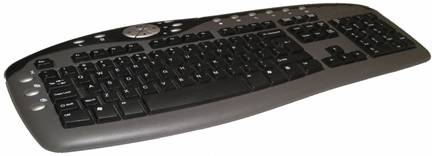

|
9.- Teclado  ConceptoEs un periférico o dispositivo que consiste en un sistema de teclas, como las de una máquina de escribir, que permite introducir datos a un ordenador o dispositivo digital.Cuando se presiona un carácter, se envía una entrada cifrada al ordenador, que entonces muestra el carácter en la pantalla. El término teclado numérico se refiere al conjunto de teclas con números que hay en el lado derecho de algunos teclados (no a los números en la fila superior, sobre las letras). Los teclados numéricos también se refieren a los números (y a las letras correspondientes) en los teléfonos móviles.
Además algunos teclados tienen funciones especiales, tales como prender el equipo, acceder a Internet o a algunas paginas que el usuario previamente ha definido.
|
|---|